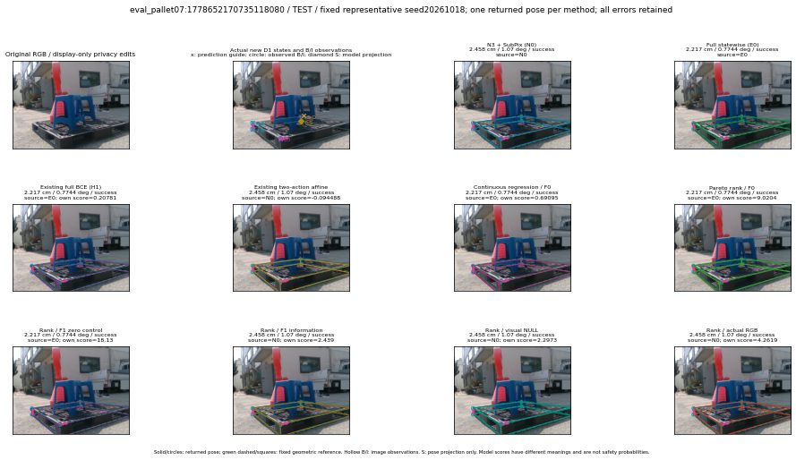

실선은 반환 자세, 초록 점선은 고정 기하 참조입니다. S는 영상 관측이 아닙니다. 점수는 모델별 의미가 다르며 보정된 안전 확률이 아닙니다. 개인정보 처리는 표시 사본에만 적용했습니다.
| 방법·seed | 위치 / 회전 / 공동성공 | 실제 출처 | 선택 후보 | 각 모델 자체 점수 |
|---|---|---|---|---|
| N0 | 2.458 cm / 1.07 deg / success | N0 | N/A | N/A |
| E0 | 2.217 cm / 0.7744 deg / success | E0 | N/A | N/A |
| E0_REGENERATED | 2.217 cm / 0.7744 deg / success | E0 | E0_REGENERATED | N/A |
| POSEFIX_SUBPIX_PF_ANCHOR | 2.504 cm / 1.592 deg / success | OTHER | N/A | N/A |
| POSEFIX_SUBPIX_YOLO_ANCHOR | 2.52 cm / 1.586 deg / success | OTHER | N/A | N/A |
| D1_H1_MLP_s20261018 | 2.217 cm / 0.7744 deg / success | E0 | E0_REGENERATED | 0.207814022898674 |
| D1_H1_MLP_s20261019 | 2.217 cm / 0.7744 deg / success | E0 | E0_REGENERATED | -0.3385537564754486 |
| D1_H1_MLP_s20261020 | 2.217 cm / 0.7744 deg / success | E0 | E0_REGENERATED | 0.44325804710388184 |
| D1_H1_PAIR_MLP_s20261018 | 2.217 cm / 0.7744 deg / success | E0 | E0_REGENERATED | -0.8055682182312012 |
| D1_H1_PAIR_MLP_s20261019 | 2.217 cm / 0.7744 deg / success | E0 | E0_REGENERATED | -0.24849842488765717 |
| D1_H1_PAIR_MLP_s20261020 | 2.217 cm / 0.7744 deg / success | E0 | E0_REGENERATED | 0.5522880554199219 |
| D1_H1_PAIR_ROLE_AFFINE_s20261018 | 2.458 cm / 1.07 deg / success | N0 | N0 | -0.09448827803134918 |
| D1_H1_PAIR_ROLE_AFFINE_s20261019 | 2.458 cm / 1.07 deg / success | N0 | N0 | 0.008305463939905167 |
| D1_H1_PAIR_ROLE_AFFINE_s20261020 | 2.458 cm / 1.07 deg / success | N0 | N0 | -0.14584171772003174 |
| R_CONT_F0_s20261018 | 2.217 cm / 0.7744 deg / success | E0 | E0_REGENERATED | 0.6909473538398743 |
| R_CONT_F0_s20261019 | 2.217 cm / 0.7744 deg / success | E0 | E0_REGENERATED | 0.7395575046539307 |
| R_CONT_F0_s20261020 | 2.217 cm / 0.7744 deg / success | E0 | E0_REGENERATED | 0.7264726161956787 |
| R_ORDER_F0_s20261018 | 2.217 cm / 0.7744 deg / success | E0 | E0_REGENERATED | 9.020410537719727 |
| R_ORDER_F0_s20261019 | 2.217 cm / 0.7744 deg / success | OTHER | G13/ORIGINAL_WD/endpoint/17 | 6.54869270324707 |
| R_ORDER_F0_s20261020 | 2.217 cm / 0.7744 deg / success | E0 | E0_REGENERATED | -10.22056770324707 |
| R_ORDER_F1_ZERO_s20261018 | 2.217 cm / 0.7744 deg / success | E0 | E0_REGENERATED | 18.1301326751709 |
| R_ORDER_F1_ZERO_s20261019 | 2.217 cm / 0.7744 deg / success | E0 | E0_REGENERATED | 6.714539527893066 |
| R_ORDER_F1_ZERO_s20261020 | 2.217 cm / 0.7744 deg / success | E0 | E0_REGENERATED | 11.547279357910156 |
| R_ORDER_F1_s20261018 | 2.458 cm / 1.07 deg / success | N0 | N0 | 2.4390206336975098 |
| R_ORDER_F1_s20261019 | 2.217 cm / 0.7744 deg / success | E0 | E0_REGENERATED | 4.621526718139648 |
| R_ORDER_F1_s20261020 | 2.217 cm / 0.7744 deg / success | E0 | E0_REGENERATED | 3.8618662357330322 |
| V_ORDER_NULL_s20261018 | 2.458 cm / 1.07 deg / success | N0 | N0 | 2.297325372695923 |
| V_ORDER_NULL_s20261019 | 2.217 cm / 0.7744 deg / success | E0 | E0_REGENERATED | 1.352818489074707 |
| V_ORDER_NULL_s20261020 | 8.507 cm / 87.91 deg / failure | OTHER | G13/SWAPPED_WD/endpoint/23 | 6.9899420738220215 |
| V_ORDER_RGB_s20261018 | 2.458 cm / 1.07 deg / success | N0 | N0 | 4.261911392211914 |
| V_ORDER_RGB_s20261019 | 2.217 cm / 0.7744 deg / success | OTHER | G13/ORIGINAL_WD/endpoint/17 | 1.3037108182907104 |
| V_ORDER_RGB_s20261020 | 8.507 cm / 87.91 deg / failure | OTHER | G13/SWAPPED_WD/endpoint/23 | -6.33463716506958 |